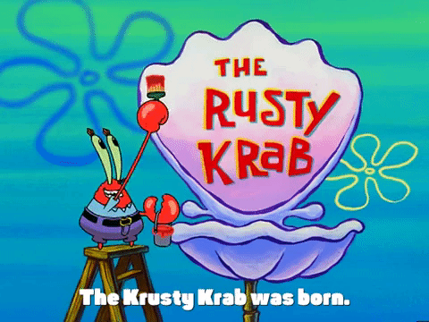

Welcome to the Krusty Krab, the home of the world-famous Krabby Patty! Our restaurant is located in the heart of Bikini Bottom and has been serving delicious fast food for years. Our owner, Mr. Krabs, is known for his love of money and his desire to make a profit. This has led to our reputation for serving high-quality food for high prices. Our menu includes classic fast food items like french fries and sodas, as well as underwater delicacies like coral bits and kelp rings. But our star attraction is the Krabby Patty, a burger with a top-secret recipe that has been the signature dish of the Krusty Krab for as long as we can remember. Our staff consists of two employees: SpongeBob, the talented fry cook who loves his job, and Squidward, the grumpy cashier who often does his job poorly. Despite their differences, they are an integral part of our team, and we are proud to have them on board. We face competition from the Chum Bucket, owned by Mr. Krabs' former best friend Plankton. While their food is often repulsive, there have been times when they have been successful, causing us to lose customers. However, we always bounce back and remain a popular destination for fast food lovers in Bikini Bottom. Our origins are unclear, but some say that we were once an old New England lobster trap or Mr. Krabs' ship from his pirate days. However we came to be, we are proud of our history and our reputation for serving delicious food. Come visit us at the Krusty Krab and taste the legendary Krabby Patty for yourself!
